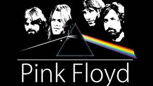
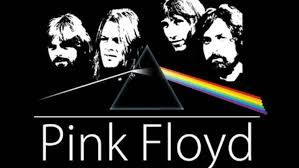

Explore how rock music has evolved over the decades!
Timeline
- Origins in Blues and Jazz (1900s–1940s)
- Notable Jazz Musicians: Louis Armstrong, Duke Ellington, Charlie Parker, Miles Davis
- Notable Blues Musicians: Robert Johnson, Muddy Waters, B.B. King, Howlin’ Wolf, Ray Charle
- Rock music has roots in African American blues and jazz. These genres laid the rhythmic and emotional foundation that rock would build on.
- 1950s Rock 'n' Roll
- Notableb Early Rock Musicians: Elvis Presley, Buddy Holly, Chuck Berry, Little Richard, Jerry Lee Lewis, and Fats Domino
- Artists like Elvis Presley and Chuck Berry brought energy and rebellion to music, making rock mainstream.
- Rock 'n' roll combined country, gospel, and R&B. Lyrics became more youth-focused, and rhythms more driving.
- Classic Rock Era (1960s–1970s)
- Notable Classic Rock Artists: The Beatles, The Rolling Stones, Led Zeppelin, Jimi Hendrix, The Who, and Pink Floyd
- The Beatles, Led Zeppelin, and The Rolling Stones dominated with experimentation and powerful sounds that defined a generation.
- The era saw the rise of psychedelic, progressive, and arena rock. Albums became conceptual; live performances got bigger. British bands dominated globally.
- Punk, Grunge & Alt-Rock (1980s–1990s)
- Notable Bands: Nirvana, Pearl Jam, Soundgarden, Alice in Chains, The Clash, Green Day, The Cranberries, Joy Division, The Cure, The Smiths, R.E.M., and The Pixies
- Genres splintered into punk (The Ramones), grunge (Nirvana), and alt-rock (Radiohead), each adding a unique flavor to the rock genre.
- Punk rejected glam and commercialism with fast, rebellious music. Grunge from Seattle introduced heavy, distorted sounds. Alt-rock diversified rock with more introspective and experimental styles.
- Modern Rock (2000s–Present)
- Notable Modern Musicians: Linkin Park, The Killers, Foo Fighters, The White Stripes, The Strokes, Muse, and Arctic Monkeys
- Bands like Foo Fighters, Arctic Monkeys, and Imagine Dragons continue to evolve rock with electronic and indie influences
- Modern rock blends with electronic, indie, and hip-hop elements. Live performance culture is huge, and genres blur as artists mix styles and production techniques.
Significant Influences
British Invasion
The British Invasion refers to the wave of UK rock and pop bands that became massively popular in the United States during the mid-1960s. Led by The Beatles, this movement included groups like The Rolling Stones, The Who, The Kinks, and The Animals. These bands brought a fresh sound influenced by American blues and rock 'n' roll, but with their own style and energy. The British Invasion had a major cultural impact, reshaping the U.S. music scene and helping rock become a global phenomenon.
- First British Invasion (1960s)
- Key Bands:> The Beatles, The Rolling Stones, The Who, The Kinks, The Animals, Herman’s Hermits
- Impact: These bands exploded in popularity in the U.S., influenced by American blues and rock ’n’ roll but with a fresh British sound. They transformed the global music scene and helped establish rock as a dominant cultural force.
- Cultural Shift: These groups didn’t just change music — they influenced fashion, youth identity, and the growth of international music markets.
- Second British Invasion (1980s)
- Key Artists: Duran Duran, Eurythmics, The Police, Culture Club, Tears for Fears, The Cure
- Impact: With the rise of MTV, British pop and rock bands again surged in the U.S., often using synths, stylish music videos, and a new wave aesthetic. This era was more electronic and visually driven than the first.
- Cultural Shift: This wave blended pop, rock, and synth-heavy production, influencing fashion, music video culture, and 1980s pop trends in America.
Women in Rock
- Pioneers: Sister Rosetta Tharpe (the “Godmother of Rock”), Janis Joplin, Grace Slick (Jefferson Airplane), Joan Jett, Patti Smith
- 1970s–1990s: Debbie Harry (Blondie), Chrissie Hynde (The Pretenders), Stevie Nicks, Courtney Love (Hole), Alanis Morissette, Kim Deal (Pixies, Breeders), Shirley Manson (Garbage)
- Modern Rock Women: Hayley Williams (Paramore), St. Vincent, Phoebe Bridgers, Mitski, Florence Welch (Florence + The Machine), Haim, Olivia Rodrigo
Women have played a significant role in shaping rock music, even if they haven’t always received equal recognition. Artists like Sister Rosetta Tharpe helped lay the groundwork for rock with her innovative guitar work, while figures like Janis Joplin, Patti Smith, and Joan Jett brought powerful vocals and a strong presence to the genre. In later decades, musicians such as Debbie Harry, Kim Deal, and Hayley Williams expanded rock’s reach across punk, alternative, and indie styles. Their contributions highlight the diversity and influence of women throughout rock’s history.
See this video for more information

 
